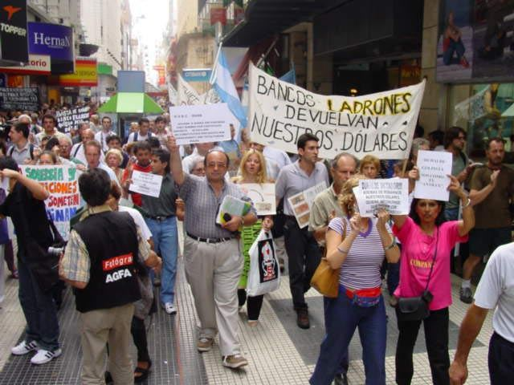
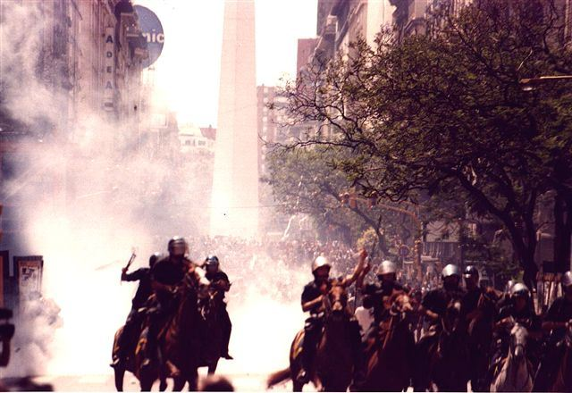
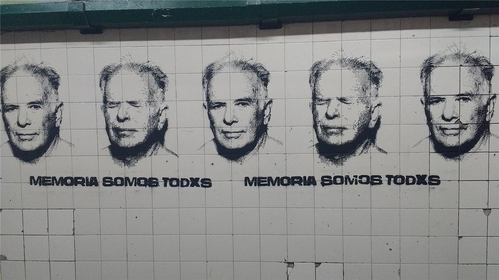

En décembre 2001, Mamie a vu à la télé des gens de tous les âges taper sur des casseroles devant les banques de Buenos Aires. Quelques mois plus tard, des camarades lui racontaient des assemblées à chaque coin de rue et des usines où les ouvrières travaillaient sans patron. Un pays entier découvrait qu'on pouvait se passer de ceux d'en haut. Ça vaut d'être raconté.
Un pays saigné
Dans les années 1990, l'Argentine applique à la lettre les recettes libérales : tout est privatisé (entreprises publiques, retraites), et le peso est attaché au dollar. Le pays s'endette auprès du FMI. À partir de 1998, c'est la récession : chômage massif, salaires en chute, fermetures d'usines. Les chômeurs s'organisent les premiers : ce sont les piqueteros, qui bloquent les routes pour exiger de quoi vivre.
Fin novembre 2001, les riches font sortir leur argent du pays. Le 2 décembre, le ministre de l'Économie, Domingo Cavallo, bloque les comptes bancaires : c'est le « corralito », pas plus de 250 dollars par semaine. Le FMI coupe les fonds.
19 et 20 décembre 2001

Les pillages de supermarchés se multiplient dans les quartiers pauvres. Le soir du 19 décembre, le président Fernando de la Rúa proclame l'état de siège. La réponse vient aussitôt : des centaines de milliers de personnes sortent dans la rue en tapant sur des casseroles, les cacerolazos, et marchent vers la place de Mai. Le cri de ralliement : « ¡Que se vayan todos! », qu'ils s'en aillent tous, les politiciens de tous les partis.
Le 20 décembre, la police charge à cheval et tire. De la Rúa s'enfuit du palais présidentiel en hélicoptère. En quelques jours, cinq présidents se succèdent. La répression fait 39 morts, tués par la police et les forces de sécurité, dont neuf mineurs. La plupart des manifestants n'appartenaient à aucun parti ni organisation.

Les assemblées de quartier
Dans les semaines qui suivent, les gens se retrouvent au coin de la rue, sur les places, pour parler de ce qui se passe. Ces asambleas barriales s'organisent sans chef ni parti, une fois par semaine. On y organise des achats collectifs de nourriture, des cantines, la défense contre les expulsions, des soins, des écoles. Une fois par semaine, une grande assemblée réunit les quartiers de Buenos Aires. Selon une enquête d'un journal de la capitale, environ un tiers de la population a participé à au moins une assemblée.
Des réseaux de troc fleurissent, avec leurs propres bons d'échange, pour vivre sans argent.
Les usines sans patron
Pendant la crise, des centaines de patrons ferment boutique et partent avec la caisse. Les travailleuses et travailleurs décident alors de rouvrir eux-mêmes : ce sont les empresas recuperadas, les entreprises récupérées. Vers 2001-2002, environ 200 entreprises sont reprises et transformées en coopératives. En 2020, on en compte près de 400, où travaillent environ 16 000 personnes.
- Brukman, à Buenos Aires : le 18 décembre 2001, une cinquantaine d'ouvrières du textile, qui réclamaient seulement de quoi payer le bus, occupent l'atelier quand les patrons disparaissent. Elles reprennent la production en assemblée.
- Zanon, à Neuquén : l'usine de carrelage devient FaSinPat, « Fábrica Sin Patrones », usine sans patrons.
- L'hôtel Bauen, à Buenos Aires : fermé fin 2001, occupé en 2003 par ses anciens salariés, qui le rouvrent eux-mêmes.
Juin 2002 : Kosteki et Santillán
Le 26 juin 2002, sur le pont Pueyrredón, à Avellaneda, la police réprime un blocage de piqueteros. Deux jeunes militants, Maximiliano Kosteki (22 ans) et Darío Santillán (21 ans), sont tués par des policiers, qui tentent ensuite de maquiller les faits. Le scandale pousse le président par intérim, Eduardo Duhalde, à avancer les élections. Deux officiers seront condamnés à la prison à perpétuité. La gare d'Avellaneda porte aujourd'hui leurs noms.

Chronologie
- 1991Le peso est attaché au dollar ; privatisations massives.
- 1998Début de la récession ; les piqueteros bloquent les routes.
- 2 décembre 2001Le « corralito » bloque les comptes bancaires.
- 18 décembre 2001Les ouvrières de Brukman occupent leur atelier.
- 19-20 décembre 2001Cacerolazos, état de siège, 39 morts ; le président s'enfuit.
- 2002Assemblées de quartier, troc, usines récupérées.
- 26 juin 2002Kosteki et Santillán tués par la police à Avellaneda.
- 2003Nouveau président élu ; le mouvement reflue.
Dans ce dossier
- Assemblées, usines sans patron et piquets : comment ça marchait.
- Ce qui est resté, ce qui a été récupéré : les leçons libertaires.
Sources et pour aller plus loin
Sur le web
- La crise de décembre 2001 (en anglais)Le corralito, les journées des 19 et 20 décembre, le bilan.
- La grande dépression argentine de 1998-2002 (en anglais)Avec les assemblées populaires et les coopératives.
- L'assassinat de Kosteki et Santillán (en espagnol)Le 26 juin 2002 et le procès.
- Les piqueterosLe mouvement des chômeurs qui bloquent les routes.
Regarder
- The Take, Avi Lewis et Naomi Klein, 2004.Un documentaire sur les usines récupérées.
Dossier écrit à partir des articles Wikipédia cités, à relire par la bande. Sources vérifiées le 13 novembre 2026.
Dossier rédigé par la bande à Mamie à partir de travaux d'historiennes et d'historiens et de textes des mouvements concernés. Libre de reproduction.